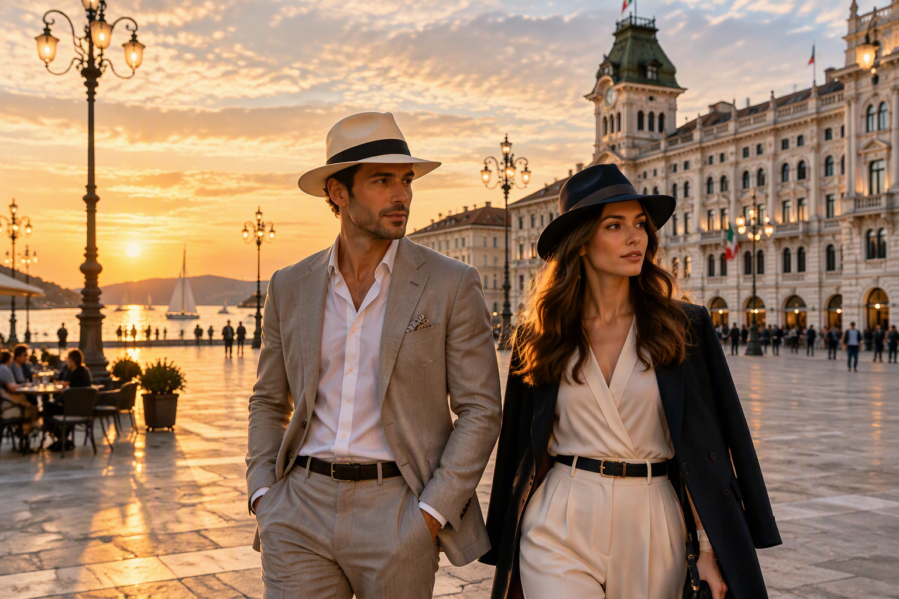
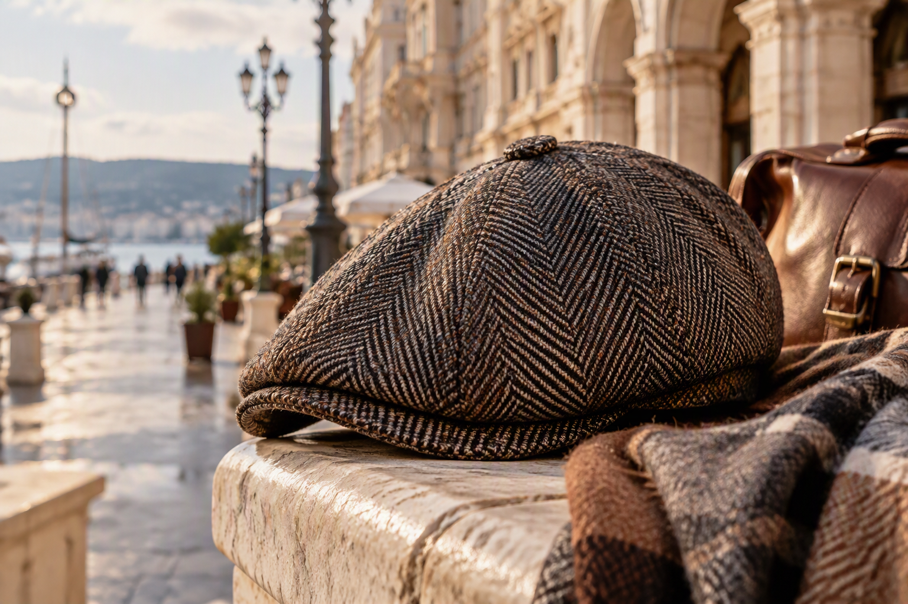
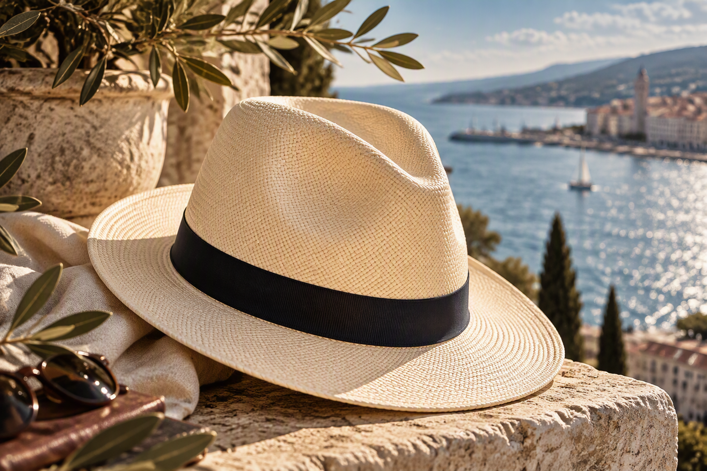

01
Panama
Leggerezza, carattere ed eleganza naturale per la bella stagione.
Cappelleria · Piazza della Borsa · Trieste
Tradizione, stile e qualità nel cuore di Trieste.
Scopri la collezione ↘Eleganza senza tempo
Outpost Trieste seleziona cappelli e accessori caratterizzati da qualità, stile e attenzione ai dettagli.
Dai Panama alle coppole, dai modelli classici alle proposte contemporanee, ogni articolo è scelto per esprimere eleganza e personalità.
La nostra filosofia →La selezione
Forme autentiche, materiali selezionati e dettagli capaci di trasformare ogni look.

Leggerezza, carattere ed eleganza naturale per la bella stagione.

Tradizione italiana reinterpretata con gusto contemporaneo.

Linee decise e proporzioni raffinate per uno stile inconfondibile.
La cultura del cappello
Ogni cappello nasce dall'incontro tra materia, forma e personalità. In boutique ti accompagniamo nella scelta del modello più adatto.
Nel cuore della città
A pochi passi da Piazza Unità d'Italia, una boutique dedicata a chi ama distinguersi con naturalezza.
Vieni a trovarci
Piazza della Borsa 7
34121 Trieste
Demo non ufficiale realizzata a scopo illustrativo.